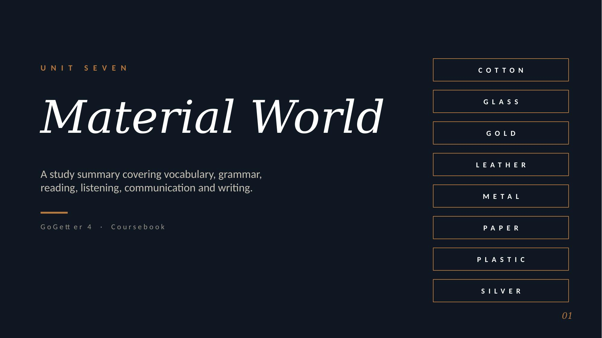

Practise all the Unit 7 vocabulary with the Quizlet set before the lesson.
Flashcards · all key vocabulary · learn, match & test modes
Browse the full unit deck — arrows, thumbnails, keyboard ← → keys, or swipe on mobile.

Common materials — natural or man-made — and the adjectives we use to describe their properties.
We use it when the action matters more than the person doing it — or when we don't know who does it.
* happen, arrive, go are intransitive verbs — they can't be made passive.
Choose the correct present simple passive form.
For completed past actions — we focus on the object, not the doer.
A famous artist painted the vase.
The doer (artist) is the subject.
The vase was painted by a famous artist.
The object (vase) becomes the subject.
Was the vase made in China?
The treasures weren't found.
Choose the correct past simple passive form.
Useful phrases for when you don't catch something, or want to check the other person has understood.
Beautiful objects can be made from natural metals or man-made materials like glass.
Verbs for using devices, plus phrasal verbs with up & down.
Use Present & Past Simple passive to describe how a product is made, used and developed.
Tick these off as you work through them.
0 of 4 complete
Review the materials vocabulary and describe five everyday objects.
Write five sentences in the Present Simple passive about food, clothes or technology.
Rewrite three active past sentences as Past Simple passive sentences using by.
Practise the clarification phrases out loud in a short dialogue with a partner.
{kind=link}